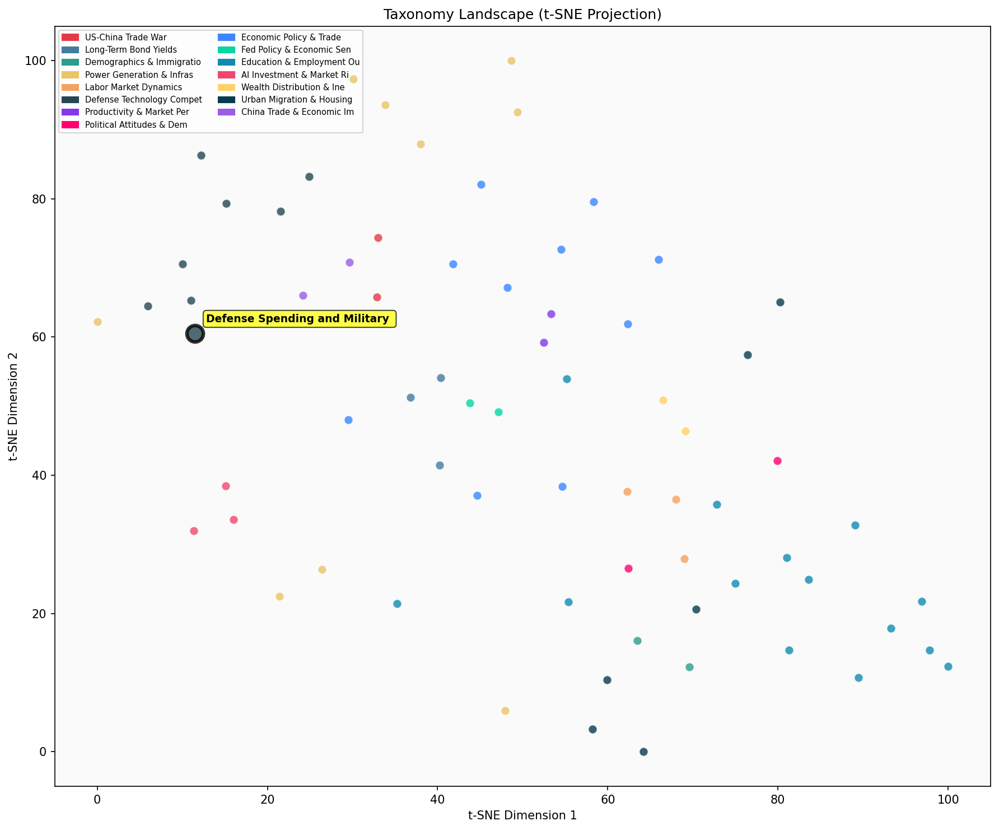

Description
This subcluster examines government defense spending levels, military procurement, and mobilization capacity across Western nations. Articles analyze defense budgets, NATO spending commitments, and industrial mobilization efforts to scale weapons production. Common sources include government officials, defense consultancies, and military analysts documenting spending gaps, production shortfalls, and rearmament initiatives. Coverage spans fiscal policy impacts, procurement timelines, and stockpile depletion rates. Unlike semiconductor-focused siblings examining supply chain vulnerabilities, this cluster concentrates on financial and industrial capacity constraints in defense manufacturing and military readiness.
Similarity to All 70 Subclusters
Each cell represents a subcluster. Color intensity shows similarity (blue=low, red=high). Black line marks current subcluster position.
Relationship to Primary Clusters
Average similarity to each of the 15 primary clusters. Larger area = stronger relationship to that cluster.
Taxonomy Landscape
All 70 subclusters positioned by similarity (t-SNE). Current subcluster highlighted with label. Click to enlarge.
Network Connections
Current subcluster at center, connected to related subclusters. Line thickness = similarity strength.
Most Representative Articles
-
1. Since 2014 the US has spent $8.4T on defense, more than double the rest of NATO’s $3.8T. Europe’s sh
-
2. Nato members' defense spending in Europe is up ⅓ in real terms since 2022, with 23 of Nato’s 32 memb
-
3. Between 2000 and 2024, NATO's defense spending averaged 1.72% of GDP, a cumulative $2T short of the
-
4. As the short-run fiscal multiplier for defence spending is likely <1, the EU’s increased defense
-
5. Raising EU defense spending to 3.5% of GDP from 1995-2023 “would have required EU member states to a
Edge Cases (Boundary Articles)
-
1. The US Navy has been depleting its Tomahawk stockpile by firing the missiles faster than it can replThis article is borderline because while it discusses military procurement and weapon stockpiles (core defense spending topics), its primary focus is on operational missile usage in a specific regional conflict (Yemen strikes) rather than broader defense budget analysis or procurement policy. The content sits at the intersection of defense spending concerns and active military operations in a regional context, making it equally relevant to discussions about military alliance strategies and regional defense deployments.
-
2. The Chinese military is drawing more heavily on recent high school and college graduates, in an effoThis article is borderline because while it mentions military recruitment (which relates to mobilization capacity), it focuses primarily on China's domestic social issue of youth unemployment and educational targeting rather than defense spending levels or budget allocations that characterize the Western-focused subcluster. The content is more about China's internal socioeconomic challenges and military personnel strategy than the financial and procurement aspects of military mobilization typically covered in defense spending discussions.
-
3. DoD found over 75% of Americans between 17 and 24 are ineligible for military service due to being "This article is borderline because while it relates to military mobilization capacity (a core theme of the cluster), it focuses specifically on recruitment eligibility challenges rather than defense spending, budgets, or procurement. The content is more about workforce demographics and eligibility barriers, which explains why it shows higher similarity to the Employment Patterns cluster that likely covers workforce participation issues more broadly.
Original Dendrogram